Examples¶
Example files for the scikit-learn statistical learning tutorial

example_names.npy
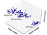
example_plot_cluster_iris.py
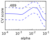
example_plot_cv_diabetes.py
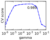
example_plot_cv_digits.py
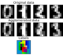
example_plot_digits_agglomeration.py

example_plot_digits_classification_excercice.py
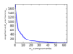
example_plot_digits_pipe.py
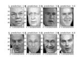
example_plot_face_recognition.py
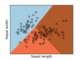
example_plot_iris_classifiers.py
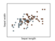
example_plot_iris_dataset.py
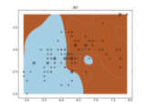
example_plot_iris_exercice.py
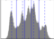
example_plot_lena_compress.py
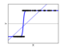
example_plot_logistic.py
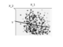
example_plot_ols_3d.py
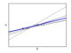
example_plot_ols_variance.py
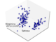
example_plot_pca_iris.py
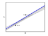
example_plot_ridge_variance.py
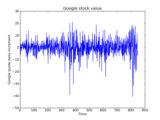
example_plot_stock_market.py
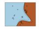
example_plot_svm_kernels.py
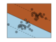
example_plot_svm_margin.py

example_variation.npy

example__plot_pca_3d.py

example__plot_pca_3d_mayavi.py